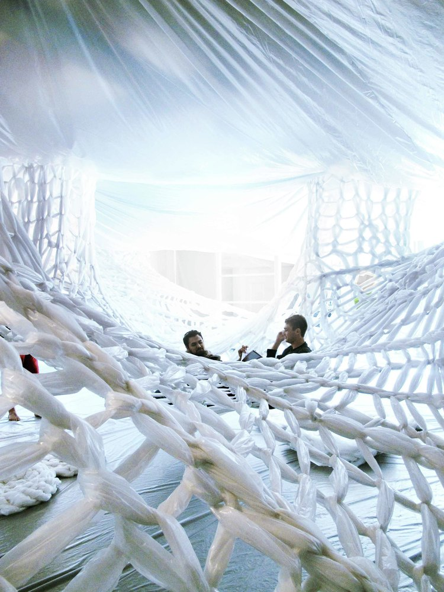

"White" Book Show Installation 2011
“White”, a gallery installation produced by the 20 students of Studio 400, a fifth-year architectural design studio at California Polytechnic State University, San Luis Obispo, served to present each of the student’s research books. The installation was designed, developed, fabricated, and installed by the studio in a collaborative effort. The students developed the design over a period of about a month, with fabrication and installation occurring over a five day period. 80,000 square feet of plastic sheeting was sliced, loomed, woven, stapled, taped and tied to provide a climbable and malleable surface in the 4,500 square foot gallery. “White” supported a variety of interactive experiences above and below this dynamic surface, opening and exploring the relationships between book, user, material, space, and collective group. More images and the studio’s description after the break.
Design Intent
The installation design began with a brainstorming session that involved direct participation by each of the studio’s 20 students. After proposals were presented, it was decided that a climbable surface would divide the space, providing seating for the comfortable reading of the books. An exploration of materials looked at rope, tape, and plastic to create the surface; sheet plastic was ultimately chosen for its flexibility and strength, economic viability given the large space, and its abilities to be easily modified and reused. Once the material was chosen and acquired, studies of traditional weaving methods and full scale mock-ups helped determine the characteristics of the surface. This resulted in a woven surface that could hang in the gallery as well as support the weight of users on it. It was determined that a flexible system of pre-fabricated hanging columns and infill panels would allow the surface to form to specific constraints of the gallery site.
Fabrication and Installation
Students participated in a collaborative, two-day effort to construct the components for the piece. Circular and straight weaving looms (assembled from re-used materials) allowed for the quick and precise weaving of the columns and panels. Round steel rod was hand-bent into five foot diameter rings that provided a transitional structure between the gallery space and the woven vertical columns. The foresight of using of pre-fabricated elements allowed the piece to be custom-fitted to the gallery space within a three-day time period.
Installation began with placing the vertical columns where the existing structure of the gallery could support them, creating a staggered plan. A sheet of plastic was then hung from the ceiling, the first piece of several that would entirely wrap the gallery space, effectively separating the piece from the distinct characteristics of the Brutalist-style gallery. The pre-constructed infill panels were then woven between the vertical columns, fitted to provide the desired tension and surface form. When the surface was finally installed, the remaining walls and floors of the gallery were covered in sheet plastic. Videos of student work could also be projected onto one of these walls and extra plastic sheeting was woven into various shapes and sizes of pillows that were used as seating under the surface and beneath the vertical columns.
Fabrication of the book’s slipcases also occurred during the installation period. Laser-cut, clear acrylic panels served as the faces of these hanging elements that would be the interface between the installation and the user. The front of each case was laser-etched with a wave-like parametric pattern that complemented the compound curves of the woven plastic surface. The clear front allowed the identity of each student’s book to reveal itself, while the chartreuse back cover served as a unifying element that subtly distinguished the books from their white surroundings.
The opening of “White” was a great success. Students and faculty were introduced to the studio’s research books in an interactive and novel environment. As one faculty member stated, “ effectively separates the book show from the gallery. Where other shows seem to be installations occurring within the distinctive gallery, this one seems like a totally different space.” Users were encouraged to crouch or crawl under the surface, rising into the vertical columns where the books were located. They could then engage the books in the intimate space under the surface, or take the books to the more socially interactive space created above the surface.
Gallery
- 

- Alison Futuro